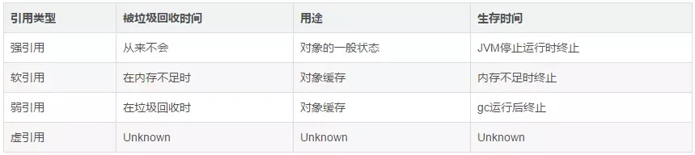

前言
互联网软件神速发展，用户的体验度是判断一个软件好坏的重要原因，所以缓存就是必不可少的一个神器。在多线程高并发场景中往往是离不开 cache 的，需要根据不同的应用场景来需要选择不同的 cache，比如分布式缓存如 redis、memcached，还有本地（进程内）缓存如 ehcache、GuavaCache、Caffeine。
说起 Guava Cache，很多人都不会陌生，它是 Google Guava 工具包中的一个非常方便易用的本地化缓存实现，基于 LRU 算法实现，支持多种缓存过期策略。由于 Guava 的大量使用，Guava Cache 也得到了大量的应用。但是，Guava Cache 的性能一定是最好的吗？也许，曾经，它的性能是非常不错的。但所谓长江后浪推前浪，总会有更加优秀的技术出现。今天，我就来介绍一个比 Guava Cache 性能更高的缓存框架：Caffeine。
比较
Google Guava 工具包中的一个非常方便易用的本地化缓存实现，基于 LRU 算法实现，支持多种缓存过期策略。
EhCache 是一个纯 Java 的进程内缓存框架，具有快速、精干等特点，是 Hibernate 中默认的 CacheProvider。
Caffeine 是使用 Java8 对 Guava 缓存的重写版本，在 Spring Boot 2.0 中将取代，基于 LRU 算法实现，支持多种缓存过期策略。
官方性能比较
场景 1：8 个线程读，100% 的读操作
场景二：6 个线程读，2 个线程写，也就是 75% 的读操作，25% 的写操作
场景三：8 个线程写，100% 的写操作
可以清楚的看到 Caffeine 效率明显的高于其他缓存。
如何使用
public static void main(String[] args) {
LoadingCache<String, String> build = CacheBuilder.newBuilder().initialCapacity().maximumSize().expireAfterWrite(, TimeUnit.DAYS)
.build(new CacheLoader<String, String>() {
//默认的数据加载实现，当调用get取值的时候，如果key没有对应的值，就调用这个方法进行加载
@Override
public String load(String key) {
return "";
}
});
}
}
参数方法
- initialCapacity(1) 初始缓存长度为 1
- maximumSize(100) 最大长度为 100
- expireAfterWrite(1, TimeUnit.DAYS) 设置缓存策略在 1 天未写入过期缓存（后面讲缓存策略）
过期策略
在 Caffeine 中分为两种缓存，一个是有界缓存，一个是无界缓存，无界缓存不需要过期并且没有界限。在有界缓存中提供了三个过期 API:
expireAfterWrite：代表着写了之后多久过期。（上面列子就是这种方式）
expireAfterAccess: 代表着最后一次访问了之后多久过期。
expireAfter: 在 expireAfter 中需要自己实现 Expiry 接口，这个接口支持 create,update, 以及 access 了之后多久过期。注意这个 API 和前面两个 API 是互斥的。这里和前面两个 API 不同的是，需要你告诉缓存框架，他应该在具体的某个时间过期，也就是通过前面的重写 create,update, 以及 access 的方法，获取具体的过期时间。
更新策略
何为更新策略？就是在设定多长时间后会自动刷新缓存。
Caffeine 提供了 refreshAfterWrite() 方法来让我们进行写后多久更新策略:
LoadingCache<String, String> build = CacheBuilder.newBuilder().refreshAfterWrite(1, TimeUnit.DAYS)
.build(new CacheLoader<String, String>() {
@Override
public String load(String key) {
return "";
}
});
上面的代码我们需要建立一个 CacheLodaer 来进行刷新, 这里是同步进行的，可以通过 buildAsync 方法进行异步构建。在实际业务中这里可以把我们代码中的 mapper 传入进去，进行数据源的刷新。
但是实际使用中，你设置了一天刷新，但是一天后你发现缓存并没有刷新。这是因为必有在 1 天后这个缓存再次访问才能刷新，如果没人访问，那么永远也不会刷新。你明白了吗？
我们来看看自动刷新他是怎么做的呢？自动刷新只存在读操作之后，也就是我们 afterRead() 这个方法，其中有个方法叫 refreshIfNeeded，他会根据你是同步还是异步然后进行刷新处理。
填充策略（Population）
Caffeine 为我们提供了三种填充策略：手动、同步和异步
手动加载（Manual）
Cache<String, Object> manualCache = Caffeine.newBuilder()
.expireAfterWrite(, TimeUnit.MINUTES)
.maximumSize(_)
.build();
String key = "name";
// 根据key查询一个缓存，如果没有返回NULL
graph = manualCache.getIfPresent(key);
// 根据Key查询一个缓存，如果没有调用createExpensiveGraph方法，并将返回值保存到缓存。
// 如果该方法返回Null则manualCache.get返回null，如果该方法抛出异常则manualCache.get抛出异常
graph = manualCache.get(key, k -> createExpensiveGraph(k));
// 将一个值放入缓存，如果以前有值就覆盖以前的值
manualCache.put(key, graph);
// 删除一个缓存
manualCache.invalidate(key);
ConcurrentMap<String, Object> map = manualCache.asMap();
cache.invalidate(key);
Cache 接口允许显式的去控制缓存的检索，更新和删除。我们可以通过 cache.getIfPresent(key) 方法来获取一个 key 的值，通过 cache.put(key, value) 方法显示的将数控放入缓存，但是这样子会覆盖缓原来 key 的数据。更加建议使用 cache.get(key，k - > value) 的方式，get 方法将一个参数为 key 的 Function (createExpensiveGraph) 作为参数传入。如果缓存中不存在该键，则调用这个 Function 函数，并将返回值作为该缓存的值插入缓存中。get 方法是以阻塞方式执行调用，即使多个线程同时请求该值也只会调用一次 Function 方法。这样可以避免与其他线程的写入竞争，这也是为什么使用 get 优于 getIfPresent 的原因。
注意：如果调用该方法返回 NULL（如上面的 createExpensiveGraph 方法），则 cache.get 返回 null，如果调用该方法抛出异常，则 get 方法也会抛出异常。
可以使用 Cache.asMap() 方法获取 ConcurrentMap 进而对缓存进行一些更改。
同步加载（Loading）
LoadingCache<String, Object> loadingCache = Caffeine.newBuilder()
.maximumSize(_)
.expireAfterWrite(, TimeUnit.MINUTES)
.build(key -> createExpensiveGraph(key));
String key = "name";
// 采用同步方式去获取一个缓存和上面的手动方式是一个原理。在build Cache的时候会提供一个createExpensiveGraph函数。
// 查询并在缺失的情况下使用同步的方式来构建一个缓存
Object graph = loadingCache.get(key);
// 获取组key的值返回一个Map
List<String> keys = new ArrayList<>();
keys.add(key);
Map<String, Object> graphs = loadingCache.getAll(keys);
LoadingCache 是使用 CacheLoader 来构建的缓存的值。批量查找可以使用 getAll 方法。默认情况下，getAll 将会对缓存中没有值的 key 分别调用 CacheLoader.load 方法来构建缓存的值。我们可以重写 CacheLoader.loadAll 方法来提高 getAll 的效率。
注意：您可以编写一个 CacheLoader.loadAll 来实现为特别请求的 key 加载值。例如，如果计算某个组中的任何键的值将为该组中的所有键提供值，则 loadAll 可能会同时加载该组的其余部分。
异步加载（Asynchronously Loading）
AsyncLoadingCache<String, Object> asyncLoadingCache = Caffeine.newBuilder()
.maximumSize(_)
.expireAfterWrite(, TimeUnit.MINUTES)
// Either: Build with a synchronous computation that is wrapped as asynchronous
.buildAsync(key -> createExpensiveGraph(key));
// Or: Build with a asynchronous computation that returns a future
// .buildAsync((key, executor) -> createExpensiveGraphAsync(key, executor));
String key = "name";
// 查询并在缺失的情况下使用异步的方式来构建缓存
CompletableFuture<Object> graph = asyncLoadingCache.get(key);
// 查询一组缓存并在缺失的情况下使用异步的方式来构建缓存
List<String> keys = new ArrayList<>();
keys.add(key);
CompletableFuture<Map<String, Object>> graphs = asyncLoadingCache.getAll(keys);
// 异步转同步
loadingCache = asyncLoadingCache.synchronous();
AsyncLoadingCache 是继承自 LoadingCache 类的，异步加载使用 Executor 去调用方法并返回一个 CompletableFuture。异步加载缓存使用了响应式编程模型。
如果要以同步方式调用时，应提供 CacheLoader。要以异步表示时，应该提供一个 AsyncCacheLoader，并返回一个 CompletableFuture。
synchronous() 这个方法返回了一个 LoadingCacheView 视图，LoadingCacheView 也继承自 LoadingCache。调用该方法后就相当于你将一个异步加载的缓存 AsyncLoadingCache 转换成了一个同步加载的缓存 LoadingCache。
默认使用 ForkJoinPool.commonPool() 来执行异步线程，但是我们可以通过 Caffeine.executor(Executor) 方法来替换线程池。
驱逐策略（eviction）
Caffeine 提供三类驱逐策略：基于大小（size-based），基于时间（time-based）和基于引用（reference-based）。
基于大小（size-based）
基于大小驱逐，有两种方式：一种是基于缓存大小，一种是基于权重。
// Evict based on the number of entries in the cache
// 根据缓存的计数进行驱逐
LoadingCache<Key, Graph> graphs = Caffeine.newBuilder()
.maximumSize(_)
.build(key -> createExpensiveGraph(key));
// Evict based on the number of vertices in the cache
// 根据缓存的权重来进行驱逐（权重只是用于确定缓存大小，不会用于决定该缓存是否被驱逐）
LoadingCache<Key, Graph> graphs = Caffeine.newBuilder()
.maximumWeight(_)
.weigher((Key key, Graph graph) -> graph.vertices().size())
.build(key -> createExpensiveGraph(key));
我们可以使用 Caffeine.maximumSize(long) 方法来指定缓存的最大容量。当缓存超出这个容量的时候，会使用 Window TinyLfu 策略来删除缓存。我们也可以使用权重的策略来进行驱逐，可以使用 Caffeine.weigher(Weigher) 函数来指定权重，使用 Caffeine.maximumWeight(long) 函数来指定缓存最大权重值。
注意：maximumWeight 与 maximumSize 不可以同时使用。
基于时间（Time-based）
// Evict based on a fixed expiration policy
// 基于固定的到期策略进行退出
LoadingCache<Key, Graph> graphs = Caffeine.newBuilder()
.expireAfterAccess(, TimeUnit.MINUTES)
.build(key -> createExpensiveGraph(key));
LoadingCache<Key, Graph> graphs = Caffeine.newBuilder()
.expireAfterWrite(, TimeUnit.MINUTES)
.build(key -> createExpensiveGraph(key));
// Evict based on a varying expiration policy
// 基于不同的到期策略进行退出
LoadingCache<Key, Graph> graphs = Caffeine.newBuilder()
.expireAfter(new Expiry<Key, Graph>() {
@Override
public long expireAfterCreate(Key key, Graph graph, long currentTime) {
// Use wall clock time, rather than nanotime, if from an external resource
long seconds = graph.creationDate().plusHours()
.minus(System.currentTimeMillis(), MILLIS)
.toEpochSecond();
return TimeUnit.SECONDS.toNanos(seconds);
}
@Override
public long expireAfterUpdate(Key key, Graph graph,
long currentTime, long currentDuration) {
return currentDuration;
}
@Override
public long expireAfterRead(Key key, Graph graph,
long currentTime, long currentDuration) {
return currentDuration;
}
})
.build(key -> createExpensiveGraph(key));
基于引用（reference-based）
强引用，软引用，弱引用概念说明请点击连接，这里说一下各各引用的区别：
Java4 种引用的级别由高到低依次为：强引用 > 软引用 > 弱引用 > 虚引用

// Evict when neither the key nor value are strongly reachable
// 当key和value都没有引用时驱逐缓存
LoadingCache<Key, Graph> graphs = Caffeine.newBuilder()
.weakKeys()
.weakValues()
.build(key -> createExpensiveGraph(key));
// Evict when the garbage collector needs to free memory
// 当垃圾收集器需要释放内存时驱逐
LoadingCache<Key, Graph> graphs = Caffeine.newBuilder()
.softValues()
.build(key -> createExpensiveGraph(key));
我们可以将缓存的驱逐配置成基于垃圾回收器。为此，我们可以将 key 和 value 配置为弱引用或只将值配置成软引用。
注意：AsyncLoadingCache 不支持弱引用和软引用。
移除监听器（Removal）
概念：
驱逐（eviction）：由于满足了某种驱逐策略，后台自动进行的删除操作
无效（invalidation）：表示由调用方手动删除缓存
移除（removal）：监听驱逐或无效操作的监听器
手动删除缓存：
在任何时候，您都可能明确地使缓存无效，而不用等待缓存被驱逐。
// individual key
cache.invalidate(key)
// bulk keys
cache.invalidateAll(keys)
// all keys
cache.invalidateAll()
Removal 监听器：
Cache<Key, Graph> graphs = Caffeine.newBuilder()
.removalListener((Key key, Graph graph, RemovalCause cause) ->
System.out.printf("Key %s was removed (%s)%n", key, cause))
.build();
您可以通过 Caffeine.removalListener(RemovalListener) 为缓存指定一个删除侦听器，以便在删除数据时执行某些操作。 RemovalListener 可以获取到 key、value 和 RemovalCause（删除的原因）。
删除侦听器的里面的操作是使用 Executor 来异步执行的。默认执行程序是 ForkJoinPool.commonPool()，可以通过 Caffeine.executor(Executor) 覆盖。当操作必须与删除同步执行时，请改为使用 CacheWrite，CacheWrite 将在下面说明。
注意：由 RemovalListener 抛出的任何异常都会被记录（使用 Logger）并不会抛出。
统计（Statistics）
Cache<Key, Graph> graphs = Caffeine.newBuilder()
.maximumSize(_)
.recordStats()
.build();
使用 Caffeine.recordStats()，您可以打开统计信息收集。Cache.stats() 方法返回提供统计信息的 CacheStats，如：
- hitRate()：返回命中与请求的比率
- hitCount(): 返回命中缓存的总数
- evictionCount()：缓存逐出的数量
- averageLoadPenalty()：加载新值所花费的平均时间
总结
Caffeine 的调整不只有算法上面的调整，内存方面的优化也有很大进步，Caffeine 的 API 的操作功能和 Guava 是基本保持一致的，并且 Caffeine 为了兼容之前是 Guava 的用户，所以使用或者重写缓存到 Caffeine 应该没什么问题，但是也要看项目情况，不要盲目使用。